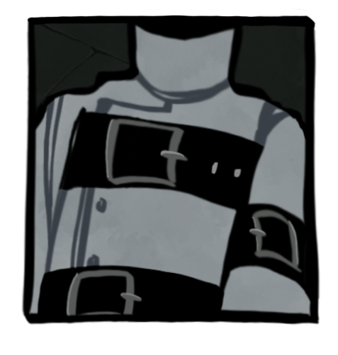

ANDY!
This young fella is a rather interesting case. You see, not only does he not have a heart, but he also lacks any kind of personality. He's not even a human! I've been researching his case for a very long time now. And there's something...something that, scares me. Even though he doesn't have a personality or anything else besides the body that would make him a human, but. Sometimes it almost seems like, he just switches. All of a sudden, he starts to act...normal. And then he switches again. It's almost like he's being controlled by someone, or...perhaps..something..?
